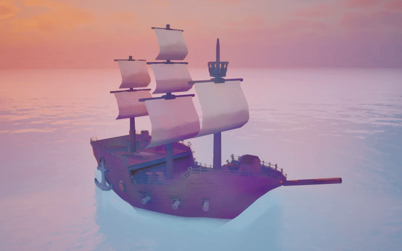

[WIP] Procedural runtime ship customization
A system that allows players ingame to fully customize their ships. Created using Unreal geometry scripting.


Spline-based hull control system
System that reshapes the shape of the hull based on a profile and length splines.
I started this project wanting the player to be able to fully control every aspect of the hull design by utilizing spline positions for the highest amount of customization. To do this, I devised a system that took a flat plane and shaped it into the shape of a ship based on the spline positions. The system starts with two main splines - the profile spline (which represents the top edge of the ship), and the length spline (which is the line from the front of the ship, to the bottom, to the back). A plane is then generated with X resolution, and the width and length of this plane is set to match the width and length of the profile and length splines combined. The profile and length splines are divided up into a polypath (also with X resolution). Then, for every vertex on the plane, the position is determined by the row and column (and mapped with a lerp to the corresponding row and/or column on the length or profile splines). For example, vertices in the center column of the plane (in a line lengthwise) will lerp to the Z coordinate of the corresponding length spline, while those on the outer columns will lerp to the Z coordinate of the profile spline (and all vertices in between will be partway between both). This value is further controlled with parameters determining the strength of the lerp.
This system resulted in a plane that perfectly conforms to the splines. The next step was giving the player runtime control over those splines after I had the system working in editor. I debated a lot of different ways to approach this, but in the end decided on a 2D editor on the side of the screen where the player can drag the spline points and have the ship react in realtime.
I've since added a vector-based runtime flag painting system for players to be able to customize masts on the ships, object placement (for furniture, masts, structures, etc), and improved the ui to make it more intuitive. Further planned work includes improvements on controlling location of the floors/walls, adding rooms and buildings, customizing textures, hull painting, increased mast control, and more.
Credits
Created by Endlessette Osborn